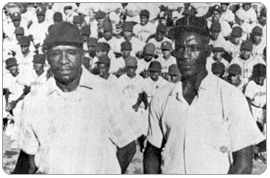
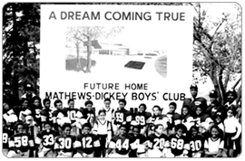
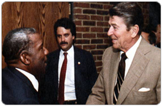

History

Martin L. Mathews & Hubert "Dickey" Ballentine

A Dream Coming True

Martin L. Mathews & President Ronald Reagan, Mathews-Dickey Boys' & Girls' Club
On a summer afternoon in 1960 two men met in Handy Park after baseball practice. Martin Luther Mathews and the late Hubert "Dickey" Ballentine, coaches of neighborhood baseball teams (the Knights and the Arabs), shared a similar concern: a desire to keep young men on the fields and off the streets. This effort required the organization of more teams, and two years later, Mathews and Dickey started a five-team league.
The number of teams grew as the men continued to meet in Handy Park. By this time there was a great need for a facility where the young men could meet. Soon plans were initiated for a clubhouse in a small storefront building at 4738 Natural Bridge (formerly occupied by Bob Russell Sporting Goods). The facility opened, attracting not only more members, but also more volunteers. The clubhouse became the Mathews-Dickey Boys' & Girls' Club. As an important part of the community, the Club provided growth and encouragement for thousands of young men.
Mathews-Dickey has come a long way since the first meeting in Handy Park and subsequent storefront clubhouse. The new facility at Kingshighway and Penrose is equipped with an Olympic-size pool, basketball gymnasiums, community meeting and music rooms, computer and tutorial labs and administrative offices. In 1982 President Ronald Reagan dedicated the facility and declared it a model for the country.
Two years later a multi-purpose outdoor athletic complex was built in honor of Baseball Hall-of-Famer James "Cool Papa" Bell. The Mathews-Dickey baseball leagues and Bull Dog football teams call the facility home. Other Club and community-wide sporting events are also held at the stadium.
In 1986 the Club established its Girls Program, under the support and direction of board member the late Charles Ruprecht and advisor N. Evelyn Williams. In 1989 a 19,000 square-foot expansion wing was built with support from August A. Busch III, then chairman and CEO Anheuser-Busch Companies, Inc.; Charles F. Knight, then chairman and CEO Emerson Electric Co.; and a dedicated staff and board of directors - with leading support from Robert Grote, Jr. and the late Richard Casey. The structure provided six learning classrooms, a dance room, a teaching and demonstration kitchen, and the Jackie Joyner-Kersee Auditorium. The Girls' Program currently serves more than 10,000 young women in the areas of education, cultural arts, personal development and athletics.
Also in 1986 the Club introduced the "Stamp Out Illiteracy Through Learning Program," which provides individualized tutoring to youth needing help in math, reading and language arts. Since the program's inception more than 5,000 students have been served. Today the Volunteer Tutorial Program works in conjunction with the St. Louis Public School System and other area school districts.
In 1992 the late NFL Hall-of-Famer Walter Payton, a former board member and consultant to Mathews-Dickey, helped the Club develop a Computer Literacy Instruction Program to augment its existing Tutorial Program. Volunteer instructors with computer expertise provide training to help the students become computer-literate.
The RBI (Reviving Baseball in the Inner Cities) program is managed by Mathews-Dickey and endorsed by Major League Baseball. It is also supported by the St. Louis Cardinals LP and other area corporations.
In addition, Mathews-Dickey houses the city-wide Motivation Vocation Preparation Program (MVP), which started in September 1991. MVP deters gang activity by encouraging youth to become active in extracurricular structured activities promoting self-esteem, goal development and achievement. Anheuser-Busch Companies, Inc. and Emerson Electric Co. provided initial funding for the program. The MVP Program is sponsored by Furniture Brands International, Inc. (formerly known as INTERCO INCORPORATED).
In 2001 the Club officially added girls to the marquee, hence becoming the Mathews-Dickey Boys' & Girls' Club. The Girls' Program Millennial Fundraising Campaign was co-chaired by broadcasters Christine Buck and Wendy Wiese. Insituform Technologies, Inc. made a major financial gift and an in-kind contribution to replace all building and marquee signage.
In 2005 Ruprecht procured a $1 million Facilities Fund challenge matching gift from the Jack Taylor Foundation. Through the support of area corporations, individuals and foundations, the Club successfully matched the gift and completed $2.3 million in restoration efforts. The project was led by Clayco, which completed work to the Kingshighway, Union Athletic and stadium facilities in 2008. Major givers were Anheuser-Busch, AmerenUE, Dana Brown Foundation, Emerson, Grote and Ruprecht.
AmerenUE executive and Club board member Richard Mark joined forces with Carole Buck, wife of the late Hall of Fame Broadcaster Jack Buck, and Cardinals Manager Tony LaRussa to institute an "In the Footprints of Jack Buck" campaign. With leading donations by Edward Jones and the William and Laura Rand Orthwein Foundation, the walk of fame was completed in 2010.
Mathews tapped former Board Member Bill Wilkerson to head up the new "Reach Out St. Louis" initiative in 2009. The program was developed to stem the drop out rate at St. Louis public high schools Beaumont, Roosevelt, Sumner and Vashon. NFL Super Bowl Champion Coach Tony Dungy, San Francisco 49er and former St. Louis Rams wide receiver Isaac Bruce, and Major League Baseball Hall of Famer Ozzie Smith headlined the Community Launch. Professional recording artist Jamie "King James" Dennis penned and performed a theme song based on the Four Tops' hit "Reach Out I'll Be There."
©2013 Mathews-Dickey Boys' & Girls' Club. All Right Reserved.
Site Designed & Donated by Dayton Ohio Web Site Design
Mathews-Dickey Boys' & Girls' Club is a nonprofit 501 (c) (3) United Way member agency that annually provides educational, athletic and cultural enrichment programs to more than 40,000 young people from throughout the St. Louis metropolitan area. For 52 years the Club has taught youth respect, restraint and responsibility so that they may obtain credibility, integrity and accountability. For more information, call Barbara A. Washington or Bill Fronczak at (314) 382-5952, ext. 234.